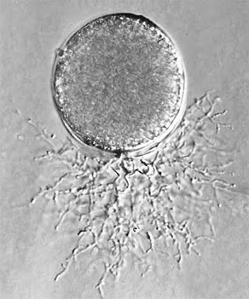

Eucariontes
Células com núcleo organizado e organelas membranosas, como mitocôndrias — diferente de bactérias e arqueias.
Biologia · Trabalho Escolar
Sob o solo, dentro da madeira e escondidos no ar, os fungos formam um dos reinos mais antigos e essenciais da natureza — nem planta, nem animal, mas um domínio próprio de decompositores, parasitas e parceiros silenciosos.
Explorar o reino
O que define um fungo, do bolor ao cogumelo
Células com núcleo organizado e organelas membranosas, como mitocôndrias — diferente de bactérias e arqueias.
O mesmo polissacarídeo que forma o exoesqueleto de insetos reveste a célula fúngica — não celulose, como nas plantas.
O corpo é formado por filamentos microscópicos (hifas) que se ramificam e se entrelaçam, formando o micélio.
Estruturas leves e resistentes, dispersas pelo vento, água ou animais, capazes de originar um novo indivíduo.
Não realizam fotossíntese: absorvem matéria orgânica já pronta, digerida fora do próprio corpo.
Encontrados no solo, na água, no ar e sobre outros organismos — em quase todos os ambientes da Terra.
Cinco grandes grupos, organizados como fichas de herbário

Grupo mais primitivo, majoritariamente aquático. Únicos fungos com esporos flagelados e móveis (zoósporos).

Micélio cenocítico (sem septos). Reprodução sexuada forma o zigosporângio, resistente a condições adversas.

Maior grupo de fungos. Esporos sexuados (ascósporos) produzidos dentro de uma estrutura em forma de saco, o asco.

Inclui os cogumelos típicos. Esporos sexuados (basidiósporos) formados sobre uma estrutura em forma de clava, o basídio.
Digestão fora do corpo, absorção para dentro dele
Fungos não ingerem alimento como os animais. Eles liberam enzimas digestivas no ambiente ao redor — a chamada digestão extracorpórea — decompondo a matéria orgânica em moléculas simples, depois absorvidas diretamente pela parede e membrana das hifas.
Essa estratégia coloca os fungos no centro da reciclagem de nutrientes em praticamente todos os ecossistemas terrestres.
.jpg) I
I
Decompõem matéria orgânica morta — folhas, madeira, restos de animais — devolvendo nutrientes ao solo.
 II
II
Retiram nutrientes de um hospedeiro vivo, podendo causar doenças em plantas, animais e humanos.
.jpg) III
III
Vivem em associação benéfica, como as micorrizas com raízes de plantas e os líquens com algas ou cianobactérias.
Dois caminhos, um mesmo objetivo: produzir esporos


Muitas espécies alternam entre os dois modos conforme as condições ambientais, favorecendo a dispersão rápida em épocas favoráveis e a resistência genética diversificada em períodos adversos.
Cinco reinos : um guia ilustrado dos filos da vida na terra / Lynn Margulis, Karlene V. Schwartz; Tradução de Cecília Bueno
Fungos : uma introdução à biologia, bioquímica e biotecnologia / organizadores Elisa Esposito, João Lúcio de Azevedo